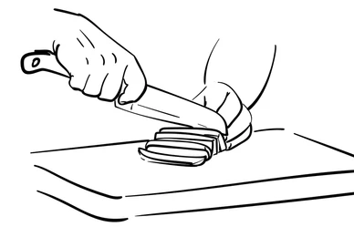

Recent Years
To overcome financial obstacles I chose a path in food service. During the past four years, I've worked extensively in hospitality and food preparation roles, honing efficiency and teamwork skills. I started at the very bottom as a fry cook for KFC. After this I cooked for Weatherspoons where I was a pizza and burger chef.
After this I worked for a family owned business called Shout! on Hollyrood road. Here I designed the menu, took care of an open styled kitchen where I pushed the kitchen through safety checks, served local football teams and crowds visiting the venues performers, a lovely experience.
As my University work became more demanding I took a short break from employment. Soon after I cooked for a busy rugby venue The Chanter where we broke records for every major event such as the 6 nations. Here I supervised inexperienced chefs, took care of day dots and record keeping of cleaning and temperatures. At the fault of the difficulty in predicting busy nights I found myself cooking for many people on my own, you would think I was stressed… I was not! I loved it.
Later I found an opportunity at a barracks in Edinburgh to cook for soldiers such as army training units and Edinburgh's Tattoo pipers. The menu pushed me to the skills of students of culinary schools, working full time early days. Again another situation I predicted stress, but only I received was the joy of progressing as a chef.
Which brings me to the present. I moved to Edinburgh to pursue a life in science, in a field I hope to create a memorable career and to devote the very best I have to offer.